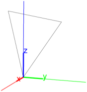
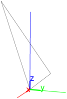

25.14.3 Parallelepipeds
The
parallelepiped
command creates parallelepipeds.
parallelepiped
takes four arguments:
A
,
B
,
C
,
D
, four points.
parallelepiped(
A
,
B
,
C
,
D
)
returns and draws the parallelepiped determined by the edges
AB
,
AC
and
AD
.
Examples
parallelepiped
([0,0,0],[5,0,0],[0,5,0],[0,0,5])

p
:=
parallelepiped
([0,0,0],[5,0,0],[0,3,0],[0,0,2]):;
c1
,
c2
,
c3
,
c4
,
c5
,
c6
,
c7
,
c8
:=
vertices
(
p
);
